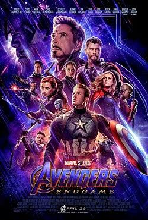
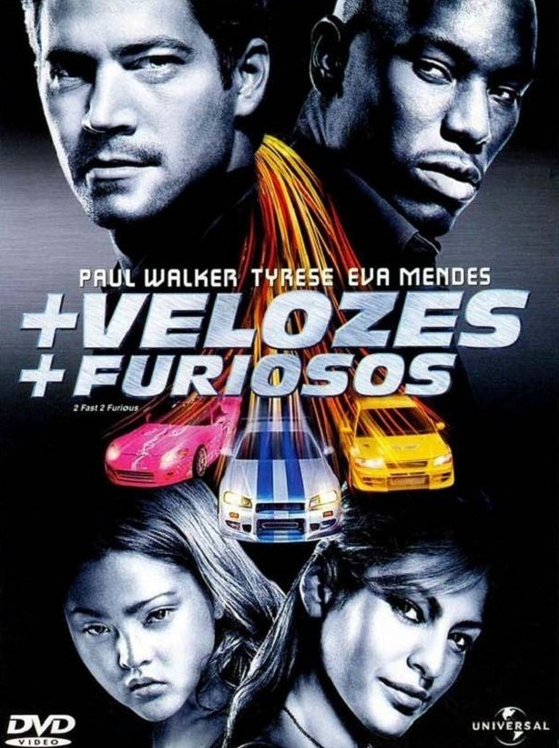
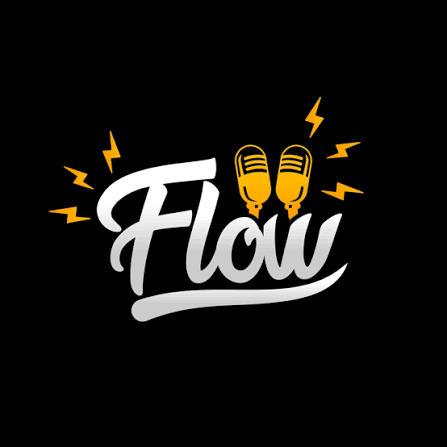
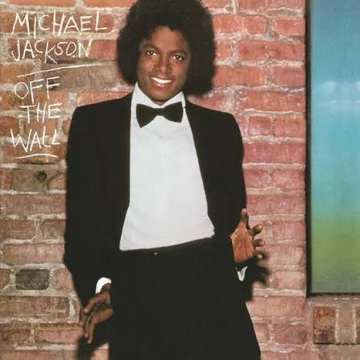
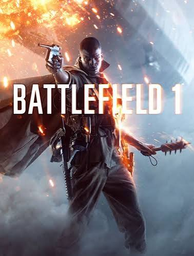
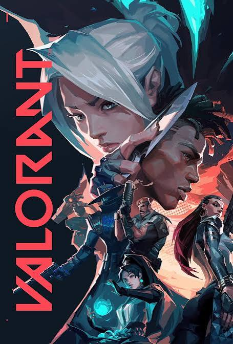

Após Thanos eliminar metade da vida do universo em Guerra Infinita, os Vingadores remanescentes se unem em uma última tentativa de reverter a tragédia.

O ex-policial Brian O'Conner (Paul Walker) muda-se para Miami e ganha a vida participando de corridas ilegais

O Flow Podcast é um dos maiores e mais influentes videocasts do Brasil, pioneiro no formato de entrevistas longas e descontraídas.

Off the Wall é o quinto álbum de estúdio de Michael Jackson, lançado em 10 de agosto de 1979 pela Epic Records e produzido por Quincy Jones.

Battlefield 1 é um jogo de tiro em primeira pessoa ambientado durante a Primeira Guerra Mundial.

Valorant é um jogo de tiro tático em primeira pessoa (FPS) competitivo e gratuito, desenvolvido pela Riot Games